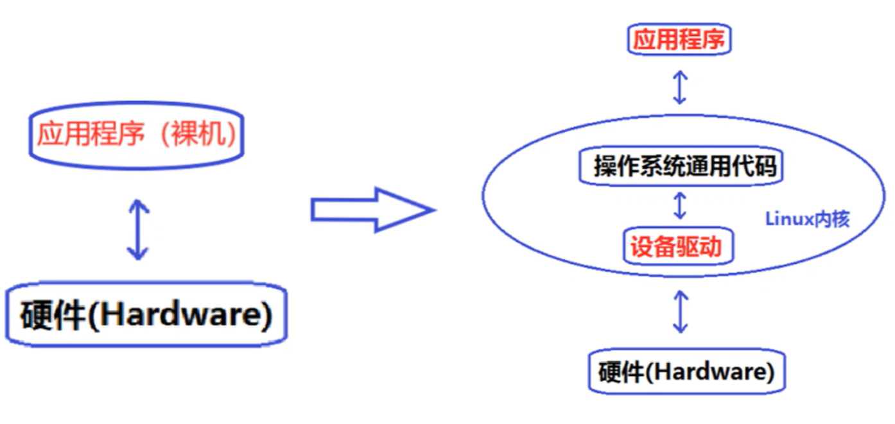
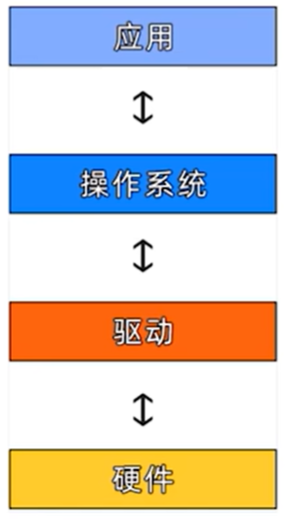
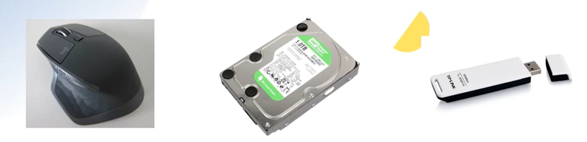

<!DOCTYPE lake>
<h1 data-lake-id="PsulB" id="PsulB"></h1><h1 data-lake-id="rLk0w" data-lake-index-type="2" id="rLk0w"><span data-lake-id="u8e54e9a8" id="u8e54e9a8" style="color: rgb(44, 44, 54)">驱动的作用</span></h1><p data-lake-id="ueaed2f2b" id="ueaed2f2b" style="text-indent: 2em"><span class="lake-fontsize-12" data-lake-id="uc45f8936" id="uc45f8936">驱动是直接和硬件打交道的,是底层硬件和上层软件的桥梁</span></p><p data-lake-id="u492df084" id="u492df084" style="text-indent: 2em"></p><h1 data-lake-id="vGXxH" data-lake-index-type="2" id="vGXxH"><span data-lake-id="u1dc98b28" id="u1dc98b28">无操作系统时的驱动</span></h1><p data-lake-id="uf2858bbe" id="uf2858bbe" style="text-indent: 2em"><span data-lake-id="u327d8dff" id="u327d8dff">有时候并不一定需要操作系统,比如用单片机进行简单的通断控制,从编程的角度来说,直接控制寄存器就可以了,也就是直接和硬件打交道</span></p><h1 data-lake-id="QtCsU" data-lake-index-type="2" id="QtCsU"><span data-lake-id="u47751e62" id="u47751e62">有操作系统时的驱动(Linux系统)</span></h1><p data-lake-id="uc563fb58" id="uc563fb58" style="text-indent: 2em"><span data-lake-id="u41c1135c" id="u41c1135c">要基于Linux的各种驱动框架进行编程,当驱动都按照系统给出的框架进行编程以后,就可以提供一个统一的接口给应用程序调用</span></p><p data-lake-id="ufe6c1a69" id="ufe6c1a69" style="text-indent: 2em"></p><h1 data-lake-id="udA4S" data-lake-index-type="2" id="udA4S"><span data-lake-id="u134354f7" id="u134354f7">驱动分类</span></h1><p data-lake-id="ub453d3d2" id="ub453d3d2"><span class="lake-fontsize-12" data-lake-id="u9e14d981" id="u9e14d981" style="color: rgb(44, 44, 54)">Linux将驱动分为</span><strong><span class="lake-fontsize-12" data-lake-id="u3760b642" id="u3760b642" style="color: rgb(17, 24, 39)">字符设备</span></strong><span class="lake-fontsize-12" data-lake-id="u8e306f45" id="u8e306f45" style="color: rgb(44, 44, 54)">、</span><strong><span class="lake-fontsize-12" data-lake-id="uf8106a29" id="uf8106a29" style="color: rgb(17, 24, 39)">网络设备</span></strong><span class="lake-fontsize-12" data-lake-id="uf3fda054" id="uf3fda054" style="color: rgb(44, 44, 54)">，</span><strong><span class="lake-fontsize-12" data-lake-id="u62ac220f" id="u62ac220f" style="color: rgb(17, 24, 39)">块设备</span></strong><span class="lake-fontsize-12" data-lake-id="uf907c1e3" id="uf907c1e3" style="color: rgb(44, 44, 54)">三类。</span></p><ul list="u3eb703b6"><li data-lake-id="ubc84f98c" fid="ucb8728e2" id="ubc84f98c"><span class="lake-fontsize-12" data-lake-id="ub0cd9015" id="ub0cd9015" style="color: rgb(44, 44, 54)">字符设备指那些必须以串行顺序依次进行访问的设备，如鼠标。</span></li><li data-lake-id="uce08a2b4" fid="ucb8728e2" id="uce08a2b4"><span class="lake-fontsize-12" data-lake-id="u111fec53" id="u111fec53" style="color: rgb(44, 44, 54)">块设备可以按照任意顺序进行访问，如硬盘。</span></li><li data-lake-id="uedac76fb" fid="ucb8728e2" id="uedac76fb"><span class="lake-fontsize-12" data-lake-id="uc03aca69" id="uc03aca69" style="color: rgb(44, 44, 54)">网络设备是面向数据包的接收和发送。</span></li></ul><p data-lake-id="uf187e512" id="uf187e512"></p><p data-lake-id="u57d779b1" id="u57d779b1"><br/></p><p data-lake-id="u890f2adf" id="u890f2adf" style="text-indent: 2em"><span data-lake-id="u4f3b4d90" id="u4f3b4d90">​</span><br/></p><p data-lake-id="ubccd6d3c" id="ubccd6d3c" style="text-indent: 2em"><span class="lake-fontsize-12" data-lake-id="u023ac3f2" id="u023ac3f2">​</span><br/></p>